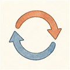

だい4わ ── サイクルの章ポンプを回す3つの知恵
第2話で、燃焼室の圧力は100気圧を超えると言いました。そこへ毎秒数百kgの推進剤を押し込み続けるには、ポンプに途方もない動力が要ります——スペースシャトルの燃料ポンプで約77,000馬力。機関車百両分の力を、どこから調達するか。この動力の工面のしかたを「サイクル」と呼びます。
知恵は大きく3つ。①推進剤を少し横取りして小さな炉で燃やし、タービンを回して捨てる（ガス発生器）。②同じく横取りして燃やすが、回したあとのガスを本番の燃焼室に合流させて使い切る（二段燃焼）。③燃やさない。ノズルを冷やしたときの熱で推進剤を沸かし、その蒸気で回す（エキスパンダー）。図の名前をタップして、ガスの通り道を見比べてください。
三者の性格は、数字にも現れます。ただし比推力は推進剤（ケロシンか水素か）の違いが大きく効くので、サイクルだけの成績表ではないことに注意して読んでください。
| サイクル | 代表エンジン | 比推力(真空) | 燃焼室圧 |
|---|---|---|---|
| ガス発生器 | Merlin 1D（ケロシン） | 311 秒 | 9.7 MPa |
| 二段燃焼(燃料リッチ) | RS-25（水素） | 452 秒 | 20.6 MPa |
| 二段燃焼(酸素リッチ) | RD-180（ケロシン） | 338 秒 | 26.7 MPa |
| エキスパンダー(閉) | RL10B-2（水素） | 465.5 秒 | 低め |
| エキスパンダーブリード | LE-9（水素） | 422 秒 | 10.0 MPa |
ガス発生器はシンプルで安いが、捨てる分だけ損（横取りしたガスは主室ほど働けないまま出ていきます）。二段燃焼は使い切るから高性能、そのかわり配管は高圧地獄で複雑。エキスパンダーはお湯を沸かして回る上品さ——ただし閉サイクルは沸かせる熱に限りがあり、大推力にできません。そこでH3のLE-9は、沸かした蒸気の一部だけでタービンを回して捨てる「ブリード（開）」方式を選び、上品さと大推力を初めて両立させました。世界初のブースタ級エキスパンダーブリードです。
よりみち圧力の家計簿 — なぜ二段燃焼は「高圧地獄」なのか
流れは高い圧力から低い圧力へしか進みません。燃焼室が20MPaなら、ポンプの吐出はそれより高くないと押し込めない。さらに二段燃焼では、その手前にプリバーナとタービンが挟まるので、ポンプはタービンの圧力降下ぶんまで上乗せして稼がねばなりません。RS-25の燃料ポンプ吐出は41MPa超——燃焼室の2倍です。開サイクル（ガス発生器・ブリード）はタービン排気を低圧の外にポイと捨てられるので、タービンで大きな膨張比が取れ、少ないガスで済み、ポンプも楽。「捨てる損」と「配管の楽さ」の取引です。
よりみち酸素リッチと燃料リッチ — プリバーナの流儀
プリバーナは推進剤を「わざと偏った比率」で燃やして、タービンが耐えられる温度のガスを作ります。水素エンジンは燃料リッチが素直（RS-25）。ところがケロシンで燃料リッチにすると煤（すす）がタービンを詰まらせる。そこでロシアは逆に酸素リッチ——灼熱の酸素ガスに金属が耐える冶金術を確立して、RD-180のような高圧エンジンを作りました。長らく他国が真似できなかった芸当です。どちらに偏らせるかひとつで、材料も設計思想も変わります。
 流体屋のためのノート
流体屋のためのノート
エキスパンダーサイクルは作動流体が推進剤そのものになったランキンサイクルの親戚です。ボイラの役は燃焼室・ノズルの冷却溝。ここで問題になるのが熱回収のスケーリングで、幾何相似の一次近似では回収熱は濡れ面積（∝L²）、必要動力は流量（∝L³）に比例——エンジンを大きくするほど熱が足りなくなり、閉エキスパンダーはRL10級で頭打ちになります。LE-9のブリード化は「全量を回すのを諦め、少量のガスに大きな膨張比で仕事をさせる」ことでこの壁を回避した設計です。タービン膨張比を稼げるのは背圧を捨てられる開サイクルの特権——第2話の圧力項の話が、ここでは設計自由度として効いてきます。
.jpg){kind=link}
・G. P. Sutton & O. Biblarz, Rocket Propulsion Elements, 9th ed., ch.6
・L3Harris (Aerojet Rocketdyne) RS-25 spec sheet／各エンジン公表スペック（Merlin 1D・RD-180・RL10B-2）
・JAXA LE-9 諸元（エキスパンダーブリードサイクル・10.0MPa・422秒）